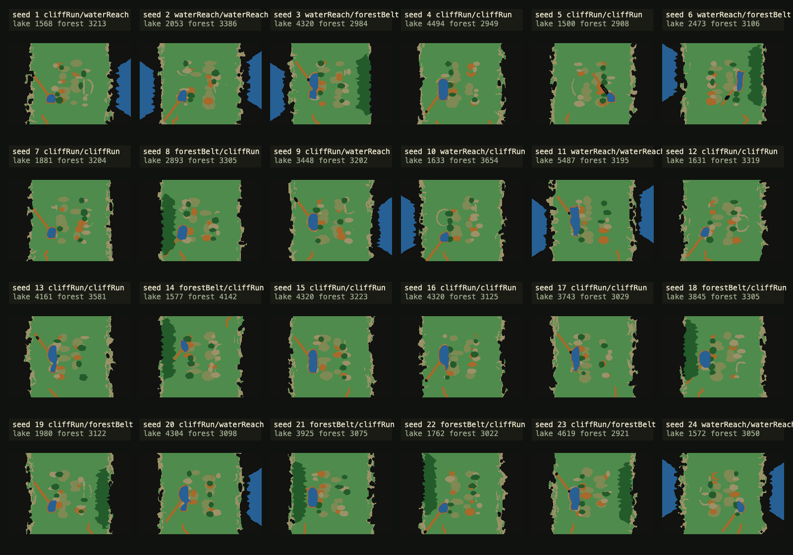

Generated battle map seed browser
BMS06-SLICE-C1F4. 24 wasm-generated passability-mask thumbnails; certificates pass, edge compositions: cliffRun/waterReach, waterReach/waterReach, waterReach/forestBelt, cliffRun/cliffRun, forestBelt/cliffRun, waterReach/cliffRun, cliffRun/forestBelt.

| seed | edge composition | terrain hash | field hash |
|---|
| 1 | cliffRun/waterReach | 0xc34652637373cb78 | 0x9f1502f7 |
| 2 | waterReach/waterReach | 0x1bbb880ed40d7507 | 0x4019eb1f |
| 3 | waterReach/forestBelt | 0x02e99f513b17372a | 0x2df196ad |
| 4 | cliffRun/cliffRun | 0x3888915f5bc4c5d7 | 0x3e593d2b |
| 5 | cliffRun/cliffRun | 0x257840975043d2f1 | 0x83834c37 |
| 6 | waterReach/forestBelt | 0x7734c91d6717c5dc | 0xf3627e7a |
| 7 | cliffRun/cliffRun | 0x5b0bcb8dd7e7f22f | 0x2ee34261 |
| 8 | forestBelt/cliffRun | 0x873bad4f86f3edab | 0x8010dfb4 |
| 9 | cliffRun/waterReach | 0x95d85bbc3aca5a8f | 0x093c6b89 |
| 10 | waterReach/cliffRun | 0x7cde018ace2b53ff | 0x1c90ed36 |
| 11 | waterReach/waterReach | 0xaafda8c077ab167d | 0xfccce43f |
| 12 | cliffRun/cliffRun | 0x1f2ce77e0b5f34ea | 0xd28cfa76 |
| 13 | cliffRun/cliffRun | 0x1d9799165571b905 | 0xc0371ac5 |
| 14 | forestBelt/cliffRun | 0x8debda027ad57265 | 0xdfd463ed |
| 15 | cliffRun/cliffRun | 0x20b056f30f1f6f32 | 0xb6d65932 |
| 16 | cliffRun/cliffRun | 0x465b137eb4c4f77e | 0xbfdcfe39 |
| 17 | cliffRun/cliffRun | 0x81f54c5e5ae9aec8 | 0xc2cac8ac |
| 18 | forestBelt/cliffRun | 0x441a11422890ab8c | 0x52a0e8de |
| 19 | cliffRun/forestBelt | 0x0b5010608fdb2c7e | 0x0af25ca6 |
| 20 | cliffRun/waterReach | 0x956d1d40c8a9d1a3 | 0x44eea37a |
| 21 | forestBelt/cliffRun | 0x8c03e0bb395dae49 | 0x505271a8 |
| 22 | forestBelt/cliffRun | 0xb1aab18f86dc7d3d | 0x83532d96 |
| 23 | cliffRun/forestBelt | 0xba421ba0371bcc97 | 0xd44a0a13 |
| 24 | waterReach/waterReach | 0xac3279eb168529e0 | 0x780b716e |